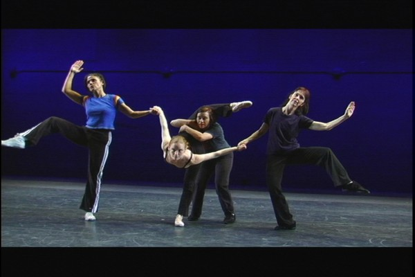
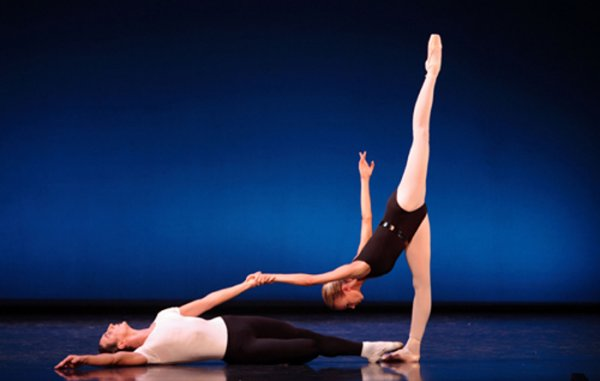
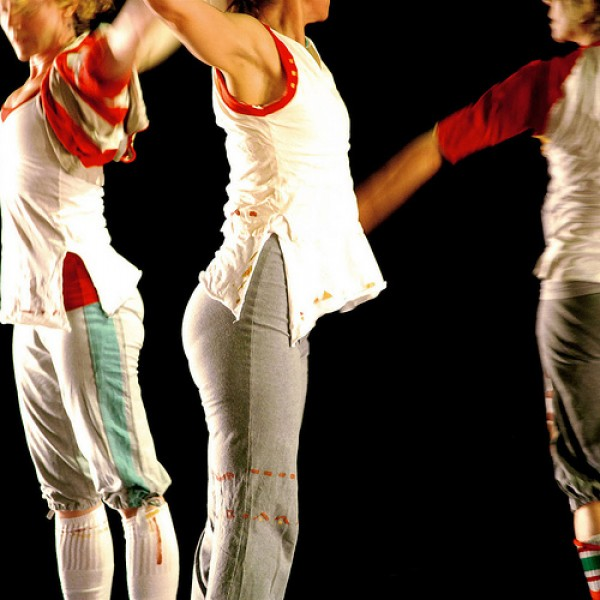
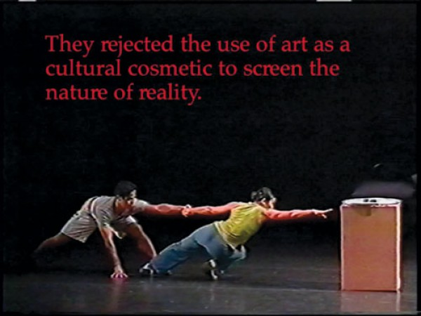

-
Choreographing the Archive
by Kari Rittenbach January 5, 2011
Amidst a slew of recent literature seeking to historicize or otherwise situate the practice of dancer, choreographer, and film-maker Yvonne Rainer, Catherine Morris noted one irreducible ‘conventionality’ of Rainer’s oeuvre: her devotion to performance as a form of display. “The performance is always performing” – and to an audience of spectators, no less. Significant for an artist often associated with the radically democratic pretensions of a certain postmodernism, Rainer’s conception of engagement bears no trace of that peculiar element of interactionism recently lauded as “participation.”
Rainer’s preferred form of spectatorship recalls the captivated audience of cinema, making her shifts between media and live performance relatively fluid. Hers is an aesthetic openness that finds expression in direction, be it that of the body’s motion or the progressive sequences of film. Thus her most recent works about and/or featuring dance can be staged live or screened as cinema, not because of any ritualized documentation procedure, but because the alchemy of the audience/performer relationship remains consistent. After all, video is often used to learn choreography; one of the dancers in AG Indexical with a little help from H.M. (2007) attempts to mime the steps in a passage from George Balanchine’s Agon (1957) by rolling out a TV screen and watching a clip play back on VCR. The audience observes her pantomime but sees only the backside of the monitor. Despite Rainer’s ‘re-vision’ of choreography here and elsewhere, her work is deeply informed by the history of dance (which, in this case, the audience does not actually rewatch in situ). Four decades on, as Morris writes, Rainer still maintains an “ambitious drive to dissect historical conventions of performance.” Together with Simone Forti and Trisha Brown and under the influence of Anna Halprin and Merce Cunningham, among others, Rainer pushed the limits of dance past Martha Graham’s modernism, thoroughly changing the spectator’s expectations for performance.
Two exhibitions at Southbank Centre in London, stretching from the autumn season, present extremely different representations of Rainer’s work, particularly in regards to the relationship between dancer and audience. The Yvonne Rainer Project at the British Film Institute explores Rainer’s works on film. In addition to feature-length films Lives of Performers (1972) and Film About a Woman Who… (1974), both intended for conventional screening, an installation in the BFI foyer galleries presents a library of Rainer’s most-plumbed theoretical and literary sources. Three relatively recent works, each originally staged live at Documenta 12, Performa 2007 and elsewhere here take the shape of video art. AG Indexical and RoS Indexical (2008), both filmed by Babette Mangolte, riff on the formalism of Balanchine’s aforementioned Agon and Vaslav Nijinsky’s frenetic footwork for the fabled Rite of Spring, respectively. The same four dancers, variously trained and ranging in age from 30 to 60, appear in both pieces, which introduce parody, anachronistic music (Henri Mancini’s Pink Panther theme in AG Indexical, for example) and more or less mundane costumes. Rainer’s treatment of the canon is plucky and humorous, but never disrespectful; she describes her reworking as “pedagogical vaudeville,” which toys with the motions of the dancers as much as with the choreographies’ cult mythology. The reception Stravinsky’s 1913 ballet received in Paris (chaos, outrage) is unlikely today, with the the largest consuming demographic preferring to storm outrageously, if not in outrage, at events such as the opening of the Kardashian’s Soho boutique. There seems an implicit lament in Rainer’s mocking of the Rite of Spring legend, one which perhaps belies a nostalgia for the monumental impact of the historical avant-gardes. What would it take to elicit such an emotional response from a dance premiere today?
Across from the BFI at the Hayward Gallery, Move: Choreographing You has been plying its experiential interactivity on the public since approximately mid-October. Iconic sculptures by Lygia Clark and Bruce Nauman, a new nine-screen video installation by Isaac Julian (Ten Thousand Waves, 2010) and a number of other works address the movement of the body in, through and around space – often neglecting duration in favor of participatory engagement (wall labels plastered near static objects encourage one to “please ask a dancer to activate this piece for you”). A handful of dancers wander by, performing, on the weekends, recent choreography by Xavier Le Roy and Mårten Spångberg as well as historic works, including Rainer’s Trio A. This had led to encounters such as on a recent Saturday when, as two dancers performed Rainer’s choreography asynchronously, a number of nearby visitors casually handled the hula-hoops stacked in the corner of the room (props for a Christian Jankowski installation). Prospective members of an “audience” treated the two dancers, whose movements went unexplained by wall text, with the deference typically afforded a Tino Sehgal: a sidelong glance and wide perimeter. The difficulty of Trio A lies in its lack of phrasing, its repetition and the stamina required to pile motion on top of motion on top of motion. The ‘reconstruction’ of Rainer’s piece at the Hayward, lumped together with so many other “interdisciplinary” works – so-called because of their difficult materiality as much as any relation to the viewer – was perplexingly banal. Its intricacy went almost entirely unrecognized. For the informed it may have been delightful to watch Trio A wind its way around the striated concrete of a Brutalist staircase, but for those unaware of the vitrine of source documents encased in the BFI galleries across the way, there was far too little access. Apart from recognizing the motions of Rainer’s work, any understanding of Trio A’s historical significance would be difficult to grasp.
If Rainer’s treatment of the archive plays with the historicity of dance without stripping away that history entirely, shouldn’t activations of her early work make similar considerations? The Hayward exhibition, foregoing a proscenium stage in order to confront viewers with choreography more directly, destroys the relationship between viewer and dancer altogether by denying both distance and duration.
Rainer’s final video work at BFI, After Many a Summer Dies the Swan: Hybrid (2002) locates the viewer in a cyclorama of Benjaminian textual montage and fragments of documented choreography. As a warning against the aestheticized decadence of Fin-de-Siecle Vienna – when “the life of art became a substitute for a life of action” – the work forms a strangely appropriate critique of today’s rampant exhibitionism, which trades conventions of ‘display’ for experiences of the spectacular. Perhaps a-historical relational stimulation is a poor format for conceptual work that demands one’s full attention. Or maybe the transition from the postmodern to the contemporary is not fully analogous to its predecessor; the postmodern novel, performance or work of art insisted on the coherence of form, if only to set off the radicality of content. The contemporary, by contrast, seeking an uneasy interdisciplinarity, dispenses with both, often confusing the comprehension of each. The more Rainer’s work, delicate for all its dense dance intelligence, is divorced from its intended setting and re-animated for contemporary purposes, the less likely it may be to eventually (in her words) “shake us out of complacency and comfort.” Postmodernism may simply be a victim of its own success, in this respect, but for Yvonne Rainer this can feel less like victory than defeat.